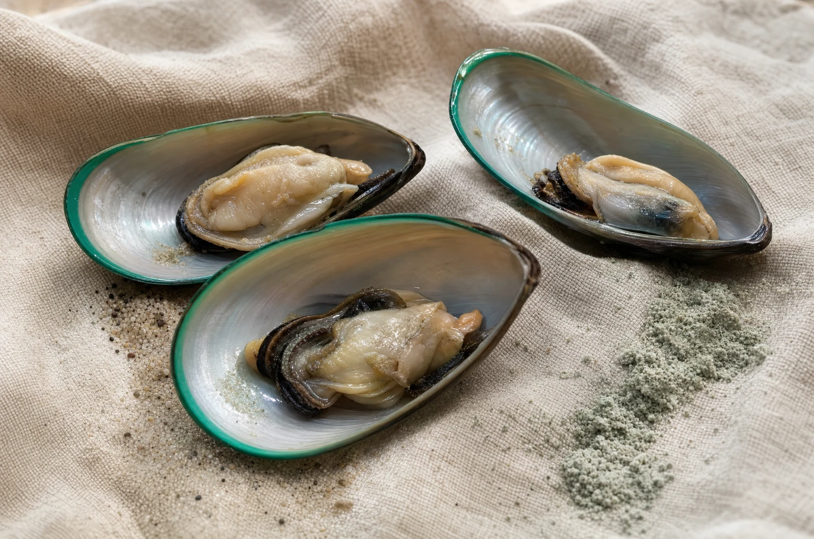

Acht frühe Anzeichen, die Halter regelmäßig übersehen
Warum „er wird eben älter“ der teuerste Satz im Hundeleben ist – und woran Sie es früher merken.
Artikel lesenBelegte Wirkung
Fast jede Marke in diesem Markt schreibt „wissenschaftlich fundiert“ auf die Packung. Fast keine schreibt dazu, wo die Belege dünn sind. Diese Seite tut beides.
Die Ausgangslage
Ergänzungsfuttermittel für Hunde sind ein Feld mit großen Versprechen und kleinen Zahlen. Auf vielen Packungen steht, welche Wirkstoffe enthalten sind – aber nicht, wie viel. Das ist kein Zufall: Zehn Milligramm eines Stoffes klingen auf der Zutatenliste genauso gut wie fünfhundert.
Wir haben uns entschieden, das anders zu machen. Auf jeder Produktseite steht die Menge je Tablette. Und auf dieser Seite steht, wie belastbar die Studienlage zu jedem einzelnen Stoff ist – auch dort, wo uns das Ergebnis nicht schmeichelt.
Was Sie hier nicht finden werden: Heilversprechen. Ergänzungsfuttermittel sind keine Medikamente. Sie ersetzen weder eine Diagnose noch eine Behandlung, und wer etwas anderes behauptet, verkauft Ihnen eine Geschichte.

Unser Maßstab
Wir benutzen intern seit Jahren eine einfache Kennzeichnung für die Belastbarkeit einer Aussage. Ab jetzt steht sie auch hier – damit Sie sehen, worauf eine Angabe beruht.
Es gibt mehr als eine unabhängige, kontrollierte Untersuchung an Hunden, und die Ergebnisse zeigen in dieselbe Richtung. Das ist der höchste Grad an Sicherheit, den es in diesem Feld realistisch gibt.
Es gibt Studien mit positiven Beobachtungen, aber sie sind klein, widersprüchlich oder stammen aus der Humanmedizin. Der Stoff ist plausibel – bewiesen ist er am Hund nicht.
Der Stoff ist verbreitet und gut verträglich, aber die Belege sind schwach oder fehlen. Wir setzen ihn als Begleitstoff ein und stellen ihn nicht als tragende Wirkung dar.
Stoff für Stoff
Sortiert nach Belastbarkeit der Daten – nicht nach dem, was sich am besten verkauft.
Von allen Stoffen in diesem Sortiment ist die Studienlage bei Omega-3 am besten. In kontrollierten Untersuchungen an Hunden mit Arthrose wurden nach mehreren Wochen häufiger Verbesserungen der Beweglichkeit beobachtet als in den Kontrollgruppen. Eine systematische Übersichtsarbeit zu Nahrungsergänzungen bei Arthrose von Hund und Katze kam 2022 zum selben Schluss: Omega-3 hat die belastbarste Datenbasis.
In unserem Gelenköl aus fünf Ölen.
Die neuseeländische Grünlippmuschel liefert Glykosaminoglykane und Omega-3-Fettsäuren in natürlicher Form. Mehrere kontrollierte Studien an Hunden zeigen Verbesserungen in Arthrose-Bewertungsskalen. Die Studien sind allerdings meist klein, und die verwendeten Präparate unterscheiden sich stark – ein direkter Übertrag auf jedes Produkt ist deshalb nicht zulässig.
300 mg je Gelenk-Tablette, 100 % rein im Pulver.
Die Wurzel enthält Harpagoside. In der Humanmedizin gibt es Untersuchungen zu Bewegungsbeschwerden mit uneinheitlichen, teils positiven Ergebnissen. Belastbare Studien speziell an Hunden sind rar. Wir setzen sie ein, weil sie traditionell verwendet wird und gut verträglich ist – nicht, weil es dafür einen Beweis am Hund gäbe.
15 mg je Tablette, konzentriert im Teufelskralle Liquid.
Die beiden bekanntesten Gelenkstoffe überhaupt – und die mit der widersprüchlichsten Datenlage. Große Humanstudien kamen zu uneinheitlichen Ergebnissen; bei Hunden gibt es kleinere Studien mit positiven Beobachtungen. Auffallend ist, dass positive Effekte fast nur bei ausreichend hoher Dosierung berichtet werden. Genau das ist der Grund, warum wir unsere eigene Rezeptur gerade überarbeiten.
75 mg Glucosamin und 15 mg Chondroitin je Tablette.
MSM ist eine organische Schwefelverbindung und ein Baustein von Bindegewebe. Zur Wirkung bei Hunden liegen uns keine belastbaren, unabhängigen Studien vor – die verfügbaren Daten stammen überwiegend aus der Humanforschung und aus Kombinationspräparaten, bei denen sich der Beitrag einzelner Stoffe nicht trennen lässt.
75 mg je Tablette.
Ingwerwurzel enthält Gingerole, deren entzündungsmodulierende Eigenschaften im Labor untersucht sind. Ob sich das in der Dosierung eines Ergänzungsfuttermittels auf den Hund überträgt, ist nicht belegt. Der Stoff ist in unserer Rezeptur ein Begleitstoff, kein tragendes Element – und wir stellen ihn auch nicht als solches dar.
15 mg je Tablette.
Zu den Quellen: Die Einordnungen stützen sich auf veröffentlichte Studien und Übersichtsarbeiten zur Arthrose bei Hund und Katze. Vor dem Livegang wird jede einzelne Aussage dieser Seite mit unserer tierärztlichen Beratung gegengelesen und mit der vollständigen Quellenangabe versehen – eine Wissenschaftsseite ohne prüfbare Quellen wäre genau die Behauptung, gegen die sie sich richtet.
Der entscheidende Punkt
Der häufigste Grund, warum ein Ergänzungsfuttermittel nichts bringt, ist nicht die falsche Zutat – sondern zu wenig davon. In den Studien, die positive Effekte beobachten, liegen die eingesetzten Mengen regelmäßig deutlich über dem, was viele Produkte im Handel liefern.
Deshalb rechnen wir auf jeder Produktseite vor, wie viel Ihr Hund bei seinem Gewicht tatsächlich am Tag bekommt. Und deshalb steht auf unserer eigenen Produktseite der Satz, dass wir den Glucosamin-Anteil für ausbaufähig halten. Ein Hersteller, der die eigene Zahl nicht kritisch sehen kann, hat entweder nicht nachgerechnet oder hofft, dass Sie es nicht tun.
Der am besten belegte Hebel bei Gelenkbeschwerden ist kein Pulver, sondern das Körpergewicht. Eine Langzeituntersuchung an Labradoren zeigte, dass Hunde mit dauerhaft knapper Fütterung später Gelenkveränderungen entwickelten und deutlich länger lebten als ihre normal gefütterten Wurfgeschwister. Kein Produkt dieser Welt gleicht das aus. Wir sagen das, obwohl es unserem Geschäft nicht nützt.
| Gewicht | Tabletten | Grünlippmuschel |
|---|---|---|
| bis 10 kg | 1 | 300 mg |
| 11 – 20 kg | 2 | 600 mg |
| 21 – 30 kg | 3 | 900 mg |
| 31 – 40 kg | 4 | 1.200 mg |
| 41 – 50 kg | 5 | 1.500 mg |
Gerechnet aus der amtlichen Deklaration: 20 % Muschelfleischmehl in einer Tablette zu 1,5 g. Glucosamin und MSM liegen je bei 5 %, also 75 mg pro Tablette.
Herstellung
„Made in Germany“ ist auf einer Packung schnell gedruckt. Für uns ist es vor allem eine praktische Entscheidung: Weil in Deutschland produziert wird, können wir bei jeder Charge sagen, was drin ist, woher es kommt und wann es abgefüllt wurde.

Grenzen
Dieser Abschnitt steht hier, weil er das Gegenteil von dem ist, was ein Shop normalerweise schreibt. Genau deshalb gehört er hin.
Tun sie nicht. Arthrose ist eine fortschreitende Veränderung des Gelenks, die sich nicht rückgängig machen lässt – weder durch ein Ergänzungsfuttermittel noch durch ein Medikament. Worum es geht, ist Beweglichkeit und Wohlbefinden im Alltag.
Nein. Wenn Ihr Hund lahmt, Schmerzen zeigt oder sich sein Verhalten ändert, gehört er untersucht. Viele unserer Kunden geben unsere Produkte begleitend zu einer Therapie – das ist der sinnvolle Weg, und er beginnt beim Tierarzt.
Er tut es nicht. In unseren Bewertungen finden Sie Halter, die nach zwei Wochen deutliche Veränderungen beschreiben, und solche, die abwarten. Genau darum gibt es 120 Tage Geld-zurück – wir verlangen nicht, dass Sie uns glauben, sondern nur, dass Sie es lange genug ausprobieren.
Eine lange Zutatenliste ist kein Qualitätsmerkmal, sondern oft das Gegenteil: Je mehr Stoffe in einer Tablette stehen, desto weniger bleibt von jedem übrig. Wir arbeiten deshalb mit wenigen Stoffen in nachprüfbarer Menge statt mit einer Liste, die beeindruckt.
Ist sie nicht – das steht oben Stoff für Stoff. Bei Omega-3 ist sie gut, bei Glucosamin umstritten, bei MSM dünn. Wer Ihnen zu allen fünf Stoffen dasselbe Ausrufezeichen verkauft, hat die Studien entweder nicht gelesen oder darauf gesetzt, dass Sie es nicht tun.
Weiterlesen
Warum „er wird eben älter“ der teuerste Satz im Hundeleben ist – und woran Sie es früher merken.
Artikel lesenDer bekannteste Gelenkstoff für Hunde – und die Frage, warum die Menge wichtiger ist als der Name.
Artikel lesen
Schonen ist der häufigste gut gemeinte Fehler. Die richtige Dosis sieht anders aus.
Artikel lesen